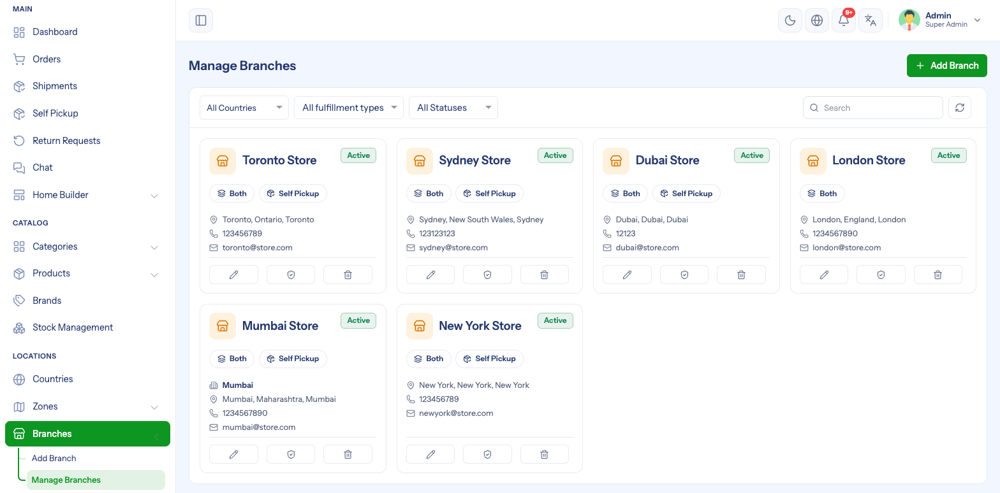
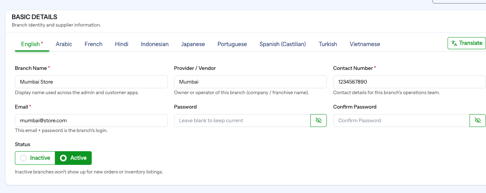
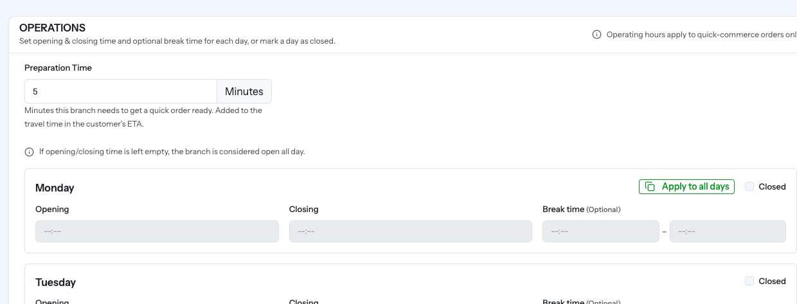
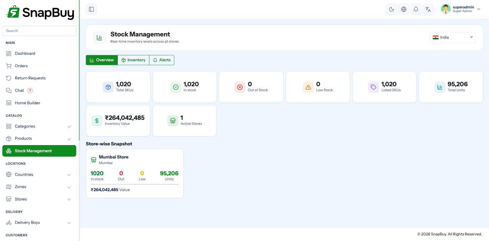

Branches
Setup Guide step 3 of 9. Menu path: Branches
A branch is a physical outlet that fulfils orders — your shop, warehouse or dark branch. It holds the location orders are dispatched from, the hours it operates, and its own stock and prices.
Branches are your outlets, not third-party sellers
SnapBuy branches are fulfilment locations that you own and operate. There is no vendor account, commission split or seller login attached to a branch. Adding a second branch means opening a second branch, not onboarding a marketplace seller.

One zone, one branch
This is the rule that shapes everything else:
Each branch belongs to exactly one zone, and each zone can hold exactly one branch.
Attempting to attach a second branch to a zone is rejected with "Zone already assigned to another branch."
Create the zone first
You cannot create a branch without selecting a zone. Work through Delivery Zones before this page. To open a second outlet, draw a new zone for its catchment area first.
This design means the customer's address decides the branch: their coordinates match a zone polygon, and that zone's branch fulfils the order.
Creating a branch
Go to Branches → Add Branch.

Basic details
| Field | Notes |
|---|---|
| Name | Shown to customers — "Andheri West Outlet" |
| Provider | Optional operator or brand label for the outlet |
| Fulfillment Type | Quick, eCommerce or Both |
| Zone | The one zone this branch serves |
| Service Modes | Home delivery only, Self pickup only or Delivery and pickup |
| Pickup Channels | Which channels may collect — Quick, eCommerce or Both. Only shown when the branch serves both channels and offers pickup. |
| Status | Inactive branches stop receiving orders |
Fulfillment type must match the zone's sales channel
A branch set to Quick cannot be attached to a zone whose sales channel is eCommerce only. SnapBuy rejects it with "Selected zone does not support this fulfillment type."
The zone declares which channels it serves; the branch must be a subset of that. A branch set to Both requires a zone set to Both.
Pincode, and connecting the branch to a courier
With a shipping plugin installed the Location block also carries a Pincode — the pickup end of every courier quote — a Check Pickup button, and a one-click Register with Shiprocket. A branch that is not registered cannot ship. See Shiprocket.
Service modes decide whether customers can collect
Set Self pickup only and the branch stops taking home delivery in its zone; set Delivery and pickup and customers choose at checkout. Pickup shows them this branch's address, map pin, phone number, preparation time and opening hours — so get those right first. See Self Pickup.
Location
| Field | Notes |
|---|---|
| Address | Free-text address shown to customers |
| Map location | Click the map to drop the pin — required |
| Latitude / Longitude | Filled from the pin |
| Formatted Address / Place ID | Filled automatically when using Google Maps |
The pin is what distance is measured from
On the quick channel, delivery charge is calculated from the branch pin to the customer. A pin dropped on the wrong side of town produces wrong charges on every single order. Zoom in and place it on the actual building.
Saving without a pin fails with "Please select branch location on map."
Contact and branch login
| Field | Used for |
|---|---|
| Contact Number | Shown to customers and delivery boys for that outlet |
| Branch-level notifications and the branch's login username | |
| Password | The branch's login password |
The email and password you set here are the credentials the branch manager uses to sign in at:
https://admin.yourstore.com/branch/loginThe email must be unique across all panel accounts
It is checked against every existing admin and branch account. If the address is already in use, saving fails — use a different one.
Branch permissions are set from the Branches list
You can assign permissions to each branch from the Branches listing. The branch then sees only the modules you have allowed, and nothing else.
Operating hours
Set open and close times per day of the week, with an optional break, and mark days closed.

Operating hours apply to quick commerce only
They govern quick-commerce orders. eCommerce orders are scheduled shipments and are accepted regardless of whether the outlet is currently open.
Leaving the opening and closing times empty means the branch is treated as open all day.
Hours are read in the country's timezone
Operating hours are evaluated against the timezone set on the branch's zone's country — not the server clock. A wrong country timezone makes the branch appear closed while it is open.
Per-branch stock and pricing
Once you have more than one branch, stock and price stop being a single global number. Each product variant carries a separate record per branch:
| Field | Meaning |
|---|---|
| Listed | Whether the product is sold at this branch at all |
| Unlimited stock | Skip stock counting for this branch |
| Stock status | In stock / out of stock |
| Available | Units on hand |
| Reserved | Units held by orders not yet delivered |
| Min alert | Low-stock threshold for this outlet |
| Price | Selling price at this branch |
| Discounted price | Offer price at this branch |
| Pricing slabs | Quantity-break pricing at this branch |
| Purchase price | Your cost at this branch |

Prices can differ per outlet
Because price lives on the branch-variant record, the same product can legitimately cost more at one outlet than another — useful when outlets sit in different tax or cost regions. If a price change "did not apply", check you edited the right branch.
A product listed nowhere is invisible
A product can exist in the catalogue, be Active, and still never appear to customers because it is not listed at the branch serving their zone. When a customer reports a missing product, check the branch listing before checking the product itself.
Day-to-day stock work is covered in Stock Management; bulk changes across many products are covered in Bulk Upload & Update.
How a branch gets chosen for an order
- Customer sets a delivery address.
- The coordinates are matched against zone polygons for the channel being shopped.
- The matched zone's single branch fulfils the order.
- Prices and stock come from that branch's variant records.
- Delivery charge is measured from that branch's pin.
This is why a missing or misconfigured zone shows up as "delivery not available" rather than as a branch error.
Deactivating a branch
Setting a branch Inactive stops new orders while preserving its history and stock records. Prefer this over deletion.
Deleting a branch is a soft delete, but it frees the zone so another branch can claim it.
Troubleshooting
| Symptom | Cause | Fix |
|---|---|---|
| "Zone already assigned to another branch" | That zone already has a branch | Create a new zone for the new outlet |
| Branch cannot sign in | Wrong email, or password never set | Re-enter the password on the branch record |
| Branch sees fewer menus than expected | Its permissions do not cover those modules | Update the branch's permissions from the Branches list |
| "Selected zone does not support this fulfillment type" | Branch channel is wider than the zone's | Change the branch type, or set the zone to Both |
| "Please select branch location on map" | No pin dropped | Click the map to place the pin |
| "Please create branch in default language first" | Creating in a secondary language | Create it in the default language first — see Manage Languages |
| Delivery charges are wrong for every order | Branch pin in the wrong place | Re-drop the pin at the real address |
| Branch shows closed during business hours | Country timezone wrong | Fix the timezone on the country |
| Product missing for some customers only | Not listed at that zone's branch | List it on that branch |
Checklist
- A zone exists for this outlet's catchment
- Fulfillment type is compatible with the zone's sales channel
- Map pin dropped on the actual building
- Operating hours set for all seven days
- Contact number filled
- Login email and password set, and the email not already used by another account
- Branch permissions assigned from the Branches list
- Products listed and priced at this branch
- Status Active